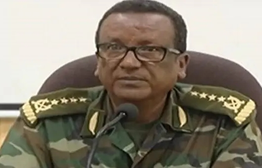

ከየፈርጁ

ፋኖ ማን ነው? በማንስ ይደገፋል?

የጠቅላይ ሚኒስትር ዐቢይ የአራት ዓመት ጉዞ በወፍ በረር ሲቃኝ

የብሔር ግጭት የሚንጣት ሀገር ኢትዮጵያ

መንግሥት እና ህወሓት ስምምነት ላይ እንዳይደርሱ ሊያደርጉ የሚችሉ አራት ጉዳዮች

በጦርነቱ ምክንያት ከአለም ተቆራርጣ ባለችው መቀለ ኑሮ ምን ይመስላል?

8 ጥቅምት 2018
ጥቃቱ በደረሰባቸው ሰዓት አማራ ክልል የ"መፈንቅለ መንግሥት" ሙከራን ለማክሸፍ ሲሠሩ እንደነበርም ተገልጿል። በተመሳሳይ በአማራ ክልል በዛኑ ቀን በደረሰ ጥቃት የክልሉ ርዕሰ መስተዳድር ዶ/ር አምባቸው መኮንንና አማካሪያቸው አቶ እዘዝ ዋሴና የክልሉ ጠቅላይ አቃቤ ሕግ አቶ ምግባሩ ከበደም ሕይወታቸውን አጥተዋል። ኢትዮጵያ ብዙ ክስተት የተከናወነበትን 2011 ዓ. ም. ለማገባደድ አንድ ቀን በቀራት በዛሬው እለት፤ በድንገት ሕይወታቸው የተቀጠፈውን የአገሪቱን ጠቅላይ ኤታማዦር ሹም ቢቢሲ አስታውሷቸዋል። የሚቀርቧቸውን በመጠየቅ ከውትድርና ጀርባ ያለውን ሕይወታቸውን ቃኝቷል።
ጄኔራል ፃድቃን፡ ከጄኔራል ሰዓረ ጋር ለመጀመሪያ ጊዜ የተገናኘነው እኔና ጄኔራል ሃየሎም የምንመራት ኃይል 73 የምትባል ሻምበል ነበረች፤ እሱ እዛው ተመድቦ መጥቶ ነው። እኔ የሻምበሏ ኮሚሳር ነበርኩ፤ ጄኔራል ሃየሎም ደግሞ ኮማንደር ነበር። ለመጀመሪያ ጊዜ የተዋወቅነውም በዚሁ አጋጣሚ ነበር። ከጄኔራል ሃየሎም ጋርም በጣም ጥሩ የሚባል ግንኙነት ነበረው። የሃየሎምን አመራርና ወታደራዊ ብቃት በጣም ነበር የሚያደንቀው።
ጄኔራል ፃድቃን፡ልክ እንደ ሁላችንም ሙዚቃ በጣም ያዝናናው ነበር። የትግርኛ ሙዚቃ ደግሞ መስማት ያስደስተዋል። በረሀ ላይ በነበርንበት ወቅት፤ እንዲሁም ከትግል በኋላ አዲስ አበባ መንግሥት ከመሰረትን በኋላ የተለያዩ በአሎች እናዘጋጃለን፤ በዚህ ወቅት ወደ መድረክ መጥቶ መጨፈርም ይወድ ነበር። ሁሌም ቢሆን አዎንታዊ አስተሳሰብ ይዞ ነው የሚንቀሳቀሰው። ልክ እንደ ማንኛውም ታጋይ እግር ኳስም ይወድ እንደነበር አስታውሳለው። ምንም እንኳን አብዛኛውን ጊዜያችንን በወታደራዊ ኃላፊነቶች ብናሳልፍም፤ አንዳንዴ ሰብሰብ የማለት እድሉን ስናገኝ ኳስ የምንጫወትባቸው ጊዜያት ነበሩ። በሬድዮም ቢሆን ስፖርታዊ ውድድሮችን የመከታተል እምብዛም እድሉ አልነበረንም።
ጄኔራል ፃድቃን፡ ጄኔራል ሰዓረ የሚሰጠውን ማንኛውም አይነት ኃላፊነት በትልቅ መነሳሳትና ፍላጎት በአግባቡ የሚወጣና ከእሱ በኩል ምንም አይነት ጉድለት እንዳይኖር አድርጎ ጥንቅቅ አድርጎ ነበር የሚሠራው። ከዚህም ባለፈ ከእሱ ሥራ መስክ ባለፈ በተጓዳኝ ሥራ መስኮች ችግር እንዳይፈጠር ቅድመ ዝግጅት የሚያደርግ ወታደር ነበር። ሰዓረ ገና ተራ ወታደር እያለ ነው የማውቀው እና ሁሌም ቢሆን ነገሮችን ቀድሞ በጥልቀት ለማወቅ የሚጥርና ጥንቅቅ አድርጎ የሚዘጋጅ፤ ምንም አይነት ነገር ለእድል የማይተው ወታደር ነው። ጦርነት ውስጥ ከገባ በኋላ ደግሞ አስፈላጊ የሆነውን ማንኛውም ጉዳይ በማንኛውም ሰአት ማከናወን የሚችል ሰው ነው። ያልተጠበቀ ነገር እንኳን ቢያጋጥም ሰዓረ በምንም ሁኔታ ሳይደናገጥ ነው እርምጃ ለመውሰድ የሚሞክረው። መደንገጥ የሚባል ነገር አልፈጠረበትም። በቃ ጀግና ወታደር ነው። ትልቅ የአመራር ብቃት ያለው ወታደራዊ መሪም ነው።
ጄኔራል ፃድቃን፡ በረሃ ላይ እያለን የምንመርጠው ምንም አይነት ምግብ አልነበረም። ያገኘነውን ነበር የምንበላው። ነገር ግን ደርግን ጥለን ወደ ሥልጣን ከመጣን በኋላ በተለይ ደግሞ ባህላዊ ምግቦችን ያዘወትር ነበር። አንድ የማልረሳው ግን በተለይ በኢትዮ-ኤርትራ ጦርነት ወቅት እሱ ወደነበረበት ግንባር በምመላለስበት ወቅት ሰብሰብ ብለን ጥብስ እንበላ ነበር። ጠዋትም ማታም ጥብስ ብንበላ ግድ አይሰጠንም ነበር። የእንጀራ ፍርፍር እና እንቁላል ፍርፍርም የምንበላባቸው ጊዜዎችን አስታውሳለሁ። ከትግል በኋላ ግን ሁሉም የየራሱ ምርጫ ሊኖረው ይችላል።
ጄኔራል ፃድቃን፡በአግአዚ ኦፐሬሽን ወቅት እጅግ አስገራሚ ተልዕኮ ነበር የተወጣው። በ1976 እና 1977 ዓ. ም. አንድ ሻለቃ ምሽግ ይዞ ተቀምጦ በጣም ተቸግረን በነበረበት ወቅት፤ ሻለቃውን ለመደምሰስ ከፍተኛ ጀግንነት በማሳየት ትልቅ ሥራ ሠርቷል። ከሁሉም በላይ ግን በኢትዮ-ኤርትራ ጦርነት ወቅት ቡሬ ግንባር ላይ በሃገር ደረጃ አጋጥሞ የነበረውን አደጋ በአስገራሚ ሁኔታ የፈታ ትልቅ ጀግና መሪ ነው።
አሸናፊ፡ ከቤተሰቡ ጋር መልካም ግንኙነት ነበረው። ሳቅ እና ጨዋታ የሚወድ ሰው ነው። ማንኛውም ሰው ሊጠይቀው ሲመጣ እንደ አንድ ትልቅ መሪ ሳይሆን እንደ እኩያ ነው የሚያጫውተው። ቀልድ ማውራት ይወዳል፤ በጣም አዝናኝ ሰው ነበር። ወደ 9ኛ ክፍል እንዳለፈ የ15 አመት ልጅ ሆኖ ነው ትግሉን የተቀላቀለው። እሱ በ1969 ዓ. ም. ወደ ትግል ሲሄድ እኔ ደግሞ በዓመቱ በ1970 ዓ. ም. ተወለድኩኝ። ነገር ግን ስለሱ ከወላጆቼ ከሰማሁት ልጅ እያለ ከጓደኞቹ ጋር ጠመንጃ በ25 ሳንቲም እያስያዙ ተኩስ ይለማመዱ ነበር ብለውናል።
አሸናፊ፡ ለአላማው ታማኝ፣ ግለኝነት የማይወድ፣ መጥፎ ነገር ሲያይ የሚበሳጭ አይነት ሰው ነው። ለአላማው ጽኑ፣ ለማይዋሽና ማይሰርቅ ሰው ደግሞ ትልቅ ክብር ይሰጣል። ለእኔ፣ አጎቴም ወንድሜም ነው። እሱ ነው ደብተር እና ልብስ እየገዛ ያስተማረኝ። የሁልጊዜም ምኞቱ ኢትዮጵያን ሰላማዊ እና ታላቅ አገር ሆና ማየት ነበር። ሕዝቡ ከድንቁርና፣ ድህነት እና ኋላ ቀርነት ተላቆ እንዲበለጽግም ይመኝ ነበር፤ ያ ነበር የትግላቸው ትልቁ አላማም። እሱ የኔ የሚለው አንድም ኃብት አላፈራም። ለልጆቹ የተወላቸው ነገር ቢኖር ጡረታውን ነው።
አሸናፊ፡ ወታደር ከመሆን ውጪ የሚመኘው ወይም የሚወደው ሙያ ይህ ነው ማለት አልችልም። ልጅ እያለ ነው ትግሉን የተቀላወለው። እንደ ወርቅ በእሳት ተፈትኖ የመጣ ሰው ነው፤ እንደ እድል ሆኖ እሱ በሕይወት ተርፎ የደረሰበት ደረጃ ደርሶ ነበር። ትግሉን ከተቀላቀለ በኋላ ከነበረው ፈታኝ ሁኔታ አንጻር እዚህ ደረጃ ይደርሳል የሚል እምነት አልነበረንም።
አሸናፊ፡ በከፍተኛ ሁኔታ ያዘነበት ቀን ቢኖር ጄነራል ሃየሎም ሞተ ተብሎ የተረዳበትን ቀን ነው። ሁሉንም የሕወሃት ታጋዮችን ያደንቃል፤ በይበልጥ ግን ለነሃየሎም፣ ኩሕለን እና ዳንቡሽ የተለየ ቦታ አለው።